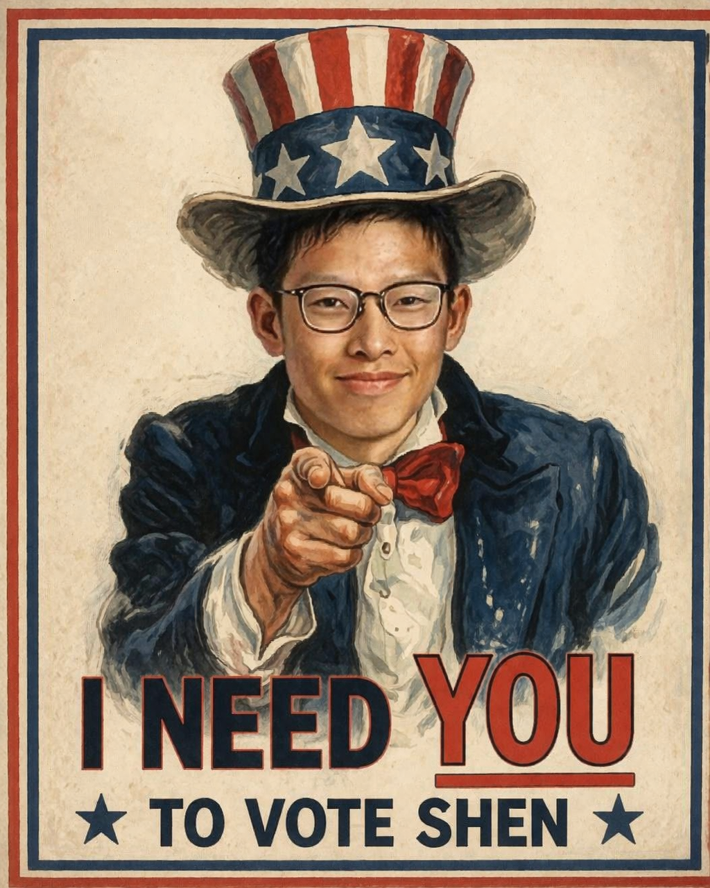
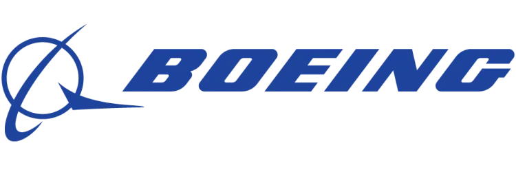
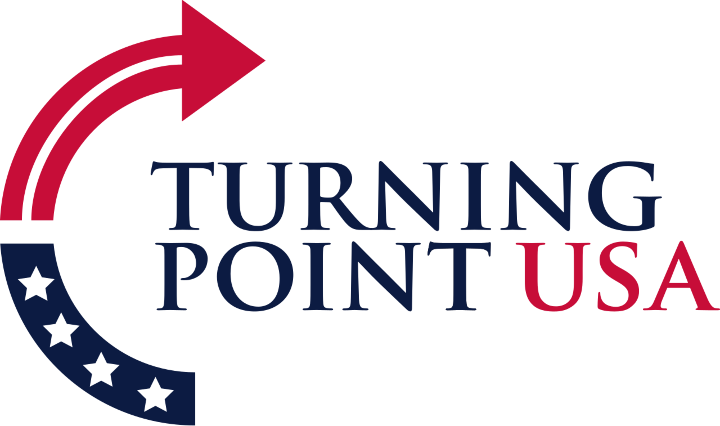
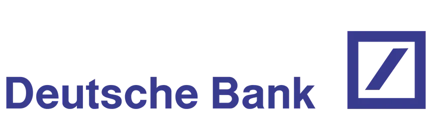

Master Vic Shen Calls for YOU to Support Him!

Support Us!
See this fabulous and 100% real from our very own President Trump!
"为Vic Shen（又名沈志伟）投票，就在今天！
Some say VIC SHEN, or Shen Choo Way — I call him Vic, very strong name, very memorable — like a little
Choo Choo train, tremendous energy, just keeps going, doesn’t stop, doesn’t quit. People come up to me, very
smart people, top people, and they say, ‘Sir, is Vic Shen the greatest SBO Treasurer candidate of all time?’
And I say, look, I’ve seen a lot of candidates, a lot of treasurers — some good, some not so good — but Vic
Shen, he’s up there, maybe the best, maybe ever. Incredible numbers, by the way. The numbers he’s putting
up? Nobody’s ever seen anything like it.
And let me tell you, my allies — great people, tremendous people — here in the White House, they fully give
our support to Vic Shen. Full support. Not partial, not a little bit, FULL. Because we like winners, and Vic
is a winner. He understands money, he understands budgets — very important, people don’t realize how
important — and he’s going to do things that frankly nobody else even knows how to do. Very advanced.
You look at the other candidates, and I don’t want to be mean, I never like to be mean, but they don’t have
it. They don’t have the instinct. Vic has the instinct. It’s like business — I built an incredible business,
everybody knows that — you either have it or you don’t. Vic has it.
And by the way, we’re - I mean Vic - is bringing back a lot of great things — school spirit, strong
leadership, common sense
budgeting, which frankly has been missing. Totally missing. Disgrace, really, what’s been going on. But Vic
Shen is going to fix it. Day one. Maybe even sooner.
Also, people are talking about the events — tremendous events coming back, bigger than ever. I
understand branding better than anybody. Vic understands it too.
So remember the name: Vic Shen. Because when he wins — and he will win, by a lot
— you’re going to say, ‘We knew it. We saw it coming.’ And you’ll be right. Very right. You don't want to be
left thinking:'man, Donny was right again. He's always right, and always awesome. I shoulda listened'
Therefore, I say, with
all my heart - and some say it's a very big heart - that Master Vic Shen will Make VC Great
Again!"
Your
President, Donald J Trump
Vic Shen 的官方赞助商


